Visualización de datos#
Introducción a la visualización de datos#
¿Por qué visualizar datos?#
Permite la transformación de información abstracta en representaciones visuales que nuestro cerebro puede procesar más eficientemente. haciendo posible:
Identificar patrones y tendencias: Nuestro cerebro detecta visualmente correlaciones, clusters y comportamientos temporales en gráficos que pasarían desapercibidos en tablas numéricas, facilitando el análisis exploratorio.
Detectar valores atípicos y anomalías: Los puntos inusuales que rompen la distribución visual general se destacan inmediatamente, permitiendo una identificación rápida de errores o eventos significativos para su investigación.
Comunicar hallazgos complejos: Un gráfico bien diseñado sintetiza grandes volúmenes de datos y relaciones complejas en una narrativa visual clara y accesible, superando las barreras del lenguaje técnico.
Explorar datos de forma interactiva: Herramientas modernas permiten filtrar, hacer zoom y consultar datos en tiempo real, fomentando una investigación dinámica y la formulación de preguntas más profundas sobre el dataset.
¿Qué resuelven las herramientas de visualización de datos?#
Las herramientas de visualización cumplen varias funciones:
Exploración: ayudan a identificar tendencias, distribuciones, anomalías y relaciones entre variables durante la fase inicial del análisis.
Comunicación: permiten transmitir hallazgos de forma comprensible, tanto a equipos técnicos como a públicos no especializados.
Validación: facilitan la detección de inconsistencias o valores atípicos en los registros antes de avanzar a etapas más complejas de modelado.
Apoyo en la toma de decisiones: al presentar la información de manera visual, favorecen la construcción de evidencia sólida para sustentar políticas públicas y programas estadísticos.
Tipos de gráficas más comunes.#
Dependiendo del objetivo y del tipo de variable, se utilizan diferentes formas de representación:
Gráficas de barras y columnas: comparaciones entre categorías.
Histogramas y diagramas de densidad: distribución de variables numéricas.
Gráficas de líneas: evolución temporal de una variable.
Diagramas de dispersión (scatter plots): relación entre dos variables.
Boxplots: análisis de dispersión y detección de valores atípicos.
Mapas: análisis espacial y geográfico.
Pirámides poblacionales: representación de estructura por sexo y edad.
Note
Cada una de estas gráficas puede ser enriquecida con elementos adicionales como colores, facetas o animaciones para mejorar la interpretación.
Significado de las librerías en lenguaje de programación#
Antes de crear nuestros primeros gráficos, es fundamental familiarizarnos con las herramientas disponibles. Tanto Python como R cuentan con ecosistemas robustos para la visualización de datos, donde no es necesario generar gráficos desde cero, sino que se emplean librerías especializadas que agilizan y simplifican notablemente este proceso. A continuación, se presentan las más utilizadas en ambos entornos:
Matplotlib
(Python): Es la librería más antigua de visualización en Python. Actúa como el cimiento sobre el que se construyen muchas otras. Ofrece un control granular sobre cada elemento de un gráfico (ejes, líneas, leyendas, colores, etc), pero su API puede ser verbosa para gráficos complejos. Se suele importar como plt.Seaborn
(Python): Construida sobre Matplotlib, se centra en la estética estadística. Simplifica la creación de gráficos complejos (como facetas o gráficos de distribución) y aplica estilos atractivos por defecto. Está muy integrada con DataFrames de pandas.Folium
(Python): Une las bondades de la biblioteca JavaScript Leaflet con la simplicidad de Python. Genera mapas interactivos que se pueden exportar como HTML.Librerías para Mapas y Geodatos Geopandas
(Python): Extiende los DataFrames de pandas para trabajar con datos geoespaciales. Es la base para crear mapas temáticos estáticos.ggplot2
(R): Esta librería domina el ecosistema de R. Implementa la “Gramática de los Gráficos”, una filosofía que concibe un gráfico como la suma de capas (datos, estéticas, geometrías, escalas). Esta estructura lógica hace que la creación y reproducción de visualizaciones sea intuitiva y poderosa.Librerías Interactivas y para Web Plotly
(Python & R): Crea visualizaciones interactivas (zoom, tooltips, paneo) de alta calidad. Su versatilidad entre ambos lenguajes la hace una herramienta fundamental.Shiny
(R): Va más allá de los gráficos. Es un framework para construir aplicaciones web y dashboards interactivos completos directamente desde R, sin necesidad de JavaScript.Leaflet
(R): La librería principal para crear mapas interactivos en R, permitiendo agregar capas, marcadores y popups de manera sencilla.
{kind=link}
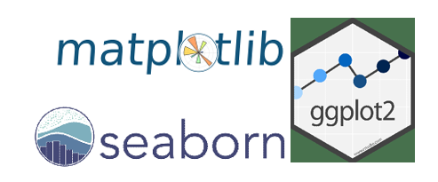
Warning
Antes de finalizar el curso se dispondrá de una guia de instalación de miniconda, jupyter lab, pyspark y R.
Matplotlib VS Ggplot2#
¿Qué lenguaje es mejor para visualización?, ¿o en este caso cuál de los dos paquetes es mejor? para aprovechar el ejercicio y aprender a usar las librerías es aún mejor ubicarlas hombro a hombro para divisar las fortalezas y debilidades mediante unas reglas de comparación establecidas en 6 rondas y una ronda adicional. En cada ronda se van a utilizar los mismos datos y utilizar gráficos idénticos en ambos lenguajes. las rondas son las siguientes:
Gráfico de dispersión
(Scatter Plot)Gráfico de contorno
(Contour Plot)Mapa de calor “Correlación”
(Heatmap)Gráfico multilínea de regresión
(Regression Multiline Graph)Gráfico de barras polares
(Polar Bar Chart)Múltiples diagramas de caja
(Multiple Boxplots)Ronda adicional
(Bonus Round)
Hoja de ruta para la comparación
En cada ronda, los paquetes se califican sobre 5, basándose en la estética y la facilidad de uso. Los resultados se encuentran al final de la sesión. Se intentará mantener el sesgo personal al mínimo y ser lo más objetivo posible.
En todas las rondas, excepto en la adicional, se intentó crear el mismo gráfico en ambos paquetes. Utilizando los mismos datos (simulados) y la misma paleta de colores.
Esto es una comparación de visualización entre paquetes, lo que significa que si matplotlib o ggplot2 no pueden producir el mismo gráfico pero otro paquete del mismo lenguaje (como seaborn o plotly) sí puede, eso no cuenta.
En todas las imágenes siguientes, tanto los gráficos como el código, matplotlib (Python) aparece primero, seguido de ggplot2 (R).
Recursos notebooks en Colab - Python y R
Notebook en Python: Enlace a Googledrive
Notebook en R: Enlace a Googledrive
Primera ronda - gráfica de dispersión#
Note
Para elaborar la gráfica se dispone de datos sintéticos o generados aleatoriamente para facilitar la reproducción de la gráfica evitando la carga de archivos adicionales.
La temática de los datos dispuestos son altura “height”, peso “weight” y un índice de densidad corporal “brozek” para revisar la relación entre las variables mediante un diagráma de dispersión.
A continuación se expresan los scripts que se utilizaron para elaborar las gráficas en los lenguajes de programación de Python y R
import numpy as np
import matplotlib.pyplot as plt
import pandas as pd
# Simular dataset
np.random.seed(42) # Fija la semilla aleatoria para reproducibilidad
n = 200 # Define el número de muestras a generar
# Genera 200 valores aleatorios con distribución normal (media=180, desv=35)
weight = np.random.normal(180, 35, n)
# Genera 200 valores aleatorios con distribución normal (media=66, desv=3)
height = np.random.normal(66, 3, n)
# Calcula la grasa como combinación lineal de peso y altura más ruido aleatorio
brozek = 0.3 * weight + 0.7 * height + np.random.normal(0, 5, n)
# Crear DataFrame
df = pd.DataFrame({'Peso': weight, 'Altura': height, 'Grasa': brozek}) # Organiza los datos en una tabla
# Crear el scatterplot
plt.figure(figsize=(5, 5)) # Crea una figura de 5x5 pulgadas
# Dibuja puntos con Peso en X, Altura en Y, coloreados según Grasa
scatter = plt.scatter(df['Peso'], df['Altura'],
c=df['Grasa'], # Color basado en el valor de Grasa
cmap='viridis', # Esquema de colores viridis
alpha=0.7, # Transparencia del 70%
s=50) # Tamaño de los puntos
plt.colorbar(scatter, label='Grasa') # Añade barra de colores con etiqueta
plt.xlabel('Peso', fontsize=9) # Etiqueta del eje X
plt.ylabel('Altura', fontsize=9) # Etiqueta del eje Y
plt.title('Peso vs Altura frente al nivel de Grasa', fontsize=10) # Título del gráfico
plt.grid(True, alpha=0.4) # Añade cuadrícula con 40% de transparencia
plt.xlim(120, 260) # Define límites del eje X
plt.ylim(64, 70) # Define límites del eje Y
plt.tight_layout() # Ajusta automáticamente el espaciado
plt.show() # Muestra el gráfico
Estructura:
Matplotlib
│
├── Figure (figura completa)
│ └── Axes (subgráfico dentro de la figura)
│ ├── Data (x, y, z, etc.)
│ ├── Plot Elements
│ │ ├── Line (plot, plot_date)
│ │ ├── Scatter (scatter)
│ │ ├── Bar (bar, barh)
│ │ ├── Image (imshow)
│ │ └── Text (annotate, text)
│ ├── Labels
│ │ ├── xlabel
│ │ ├── ylabel
│ │ └── title
│ ├── Ticks & Grid
│ │ ├── xticks, yticks
│ │ └── grid
│ ├── Legend
│ └── Colorbar (si hay mapeo de color)
│
└── Styling
├── rcParams (config global)
├── Colormaps (cmap)
└── Layout (tight_layout, subplots_adjust)
library(ggplot2) # Carga librería para gráficos avanzados
library(dplyr) # Carga librería para manipulación de datos
# Simular datos (misma estructura que en Python)
set.seed(42) # Fija la semilla aleatoria para reproducibilidad
n <- 200 # Define el número de muestras a generar
# Crea un data frame con datos aleatorios
df <- data.frame(
Weight = rnorm(n, mean = 180, sd = 35), # Genera 200 pesos con media=180, desv=35
Height = rnorm(n, mean = 66, sd = 3) # Genera 200 alturas con media=66, desv=3
) %>%
mutate(Brozek = 0.3 * Weight + 0.7 * Height + rnorm(n, 0, 5)) # Calcula índice de grasa con ruido
# Crear el gráfico con ggplot2
ggplot(df, aes(x = Weight, y = Height, color = Brozek)) + # Define datos y estética básica
geom_point(alpha = 0.7, size = 5) + # Dibuja puntos con 70% opacidad y tamaño 5
scale_color_viridis_c(option = "viridis", name = "Índice Grasa") + # Escala de color viridis continua
labs(
title = "Relación Peso vs Altura", # Título principal
subtitle = "Color representa el índice composición corporal", # Subtítulo
x = "Peso (lbs)", # Etiqueta eje X
y = "Altura (pulgadas)" # Etiqueta eje Y
) +
theme_minimal() + # Aplica tema minimalista
theme(
# Títulos de los ejes (más grandes y en negrita)
axis.title.x = element_text(size = 16, face = "bold", margin = margin(t = 10)), # Estilo título eje X
axis.title.y = element_text(size = 16, face = "bold", margin = margin(r = 10)), # Estilo título eje Y
# Etiquetas de los ejes (valores numéricos - más grandes)
axis.text.x = element_text(size = 14, color = "black"), # Tamaño y color de números eje X
axis.text.y = element_text(size = 14, color = "black"), # Tamaño y color de números eje Y
# Título principal
plot.title = element_text(face = "bold", size = 18, hjust = 0.5), # Título centrado, negrita, tamaño 18
# Subtítulo
plot.subtitle = element_text(size = 14, hjust = 0.5, color = "gray40"), # Subtítulo centrado, gris
# Grid y otros elementos
panel.grid.major = element_line(color = "gray70", linewidth = 0.3), # Líneas de cuadrícula principales
panel.grid.minor = element_blank(), # Elimina cuadrícula secundaria
legend.position = "right", # Posiciona leyenda a la derecha
legend.text = element_text(size = 14), # Tamaño del texto de la leyenda
legend.title = element_text(size = 16, face = "bold") # Título de leyenda en negrita
) +
xlim(120, 260) + # Límites del eje X
ylim(64, 70) # Límites del eje Y
Estructura:
ggplot2
│
├── ggplot(data, aes(...)) ← base del gráfico
│ └── Geoms (geometrías)
│ ├── geom_point
│ ├── geom_line
│ ├── geom_bar
│ ├── geom_histogram
│ └── geom_smooth
│
├── Scales
│ ├── scale_x_continuous / scale_y_continuous
│ ├── scale_color_viridis_c / scale_fill_manual
│ └── breaks, limits, labels
│
├── Coordinates
│ └── coord_cartesian / coord_flip / coord_polar
│
├── Facets
│ └── facet_wrap / facet_grid
│
├── Labels
│ └── labs(title, subtitle, x, y, caption)
│
├── Theme
│ ├── theme_minimal / theme_classic / theme_void
│ └── theme(...) ← ajustes finos
│
└── Guides
└── legend.position, legend.title, legend.text
Gráficos#
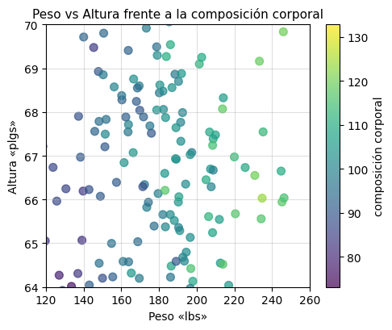 |
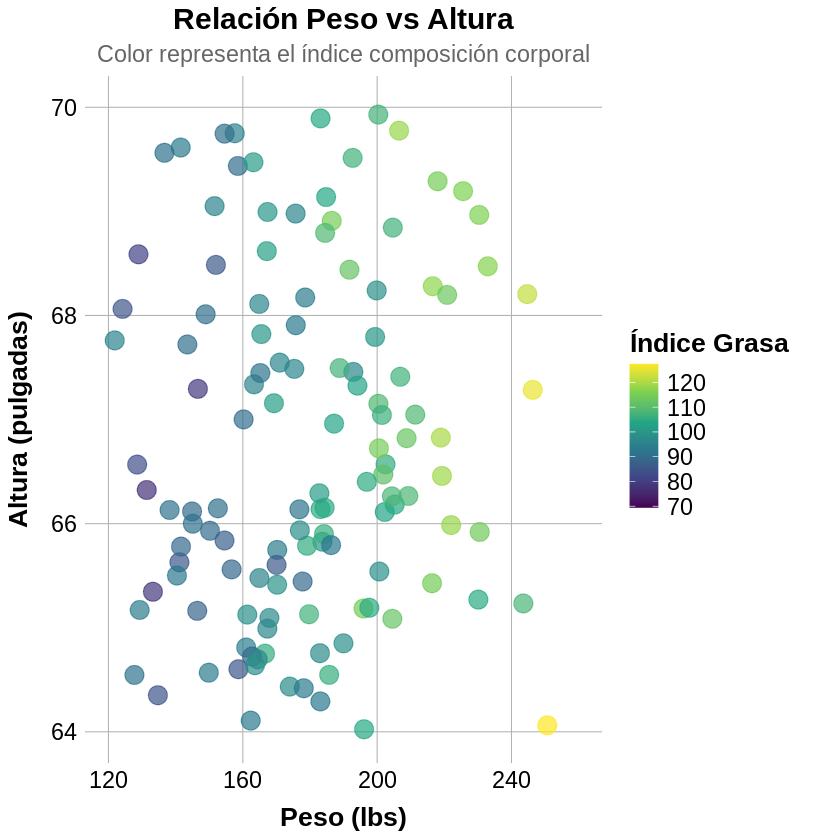 |
|---|---|
Gráfico generado en Python Utiliza la librería Matplotlib para representa la relación entre peso y altura, con el color indicando el nivel estimado de composición corporal según el modelo Brozek. |
Gráfico generado en R Utiliza Ggplot2 para mostrar la misma relación, con una estética más detallada y leyenda personalizada en la composición corporal. |
Comparando las librerías en el primer round
Ambos son excelentes, pero el mejor depende de tu objetivo.
Diferencias entre estilos
Elemento clave |
Matplotlib |
ggplot2 |
|---|---|---|
Operativa |
Procedural / manual |
Declarativa / por capas |
Entrada de datos |
Arrays, DataFrames |
DataFrames (tidy) |
Personalización |
Muy detallada, más código |
Más elegante, menos código |
Composición |
|
|
Estilo por defecto |
Básico |
Profesional y limpio |
Detalles:
Facilidad: ggplot2 es más amigable para empezar, Matplotlib requiere más tiempo de aprendizaje pero ofrece más libertad.
Detalle: Matplotlib ofrece control quirúrgico, ggplot2 es más elegante y algo más estructurado (por capas).
Versatilidad: Matplotlib es más flexible en variedad de gráficos, pero ggplot2 es tendencia en análisis estadístico.
Estética: ggplot2 tiene ventaja en apariencia profesional con menos esfuerzo.
Segunda ronda - gráfica de contorno#
Mapa de contorno KDE (Estimación por Densidad Kernel) condicional en Matplotlib vs ggplot2
Simulamos 500 observaciones de dos variables:
Amygdala: distribución normal con media 0 y desviación estándar 1.5
ACC: distribución normal con media 0 y desviación estándar 1.0.
Luego estimamos la densidad condicional del error sobre el plano (Amygdala, ACC) usando Kernel Density Estimation (KDE). El resultado se interpreta como una medida de probabilidad de ocurrencia de error en distintas regiones del espacio.
Note
En el contexto de este gráfico KDE, se está visualizando cómo varía la densidad de error en función de la actividad conjunta de la Amygdala y el ACC. Las zonas de alta densidad podrían representar estados emocionales o cognitivos donde el sistema es más propenso al error, lo cual puede ser relevante en contextos como ansiedad, toma de decisiones financieras o aprendizaje adaptativo.
import numpy as np
import matplotlib.pyplot as plt
from scipy.stats import gaussian_kde # Importa estimador de densidad por kernel gaussiano
from mpl_toolkits.axes_grid1 import make_axes_locatable # Herramienta para dividir ejes
# Simulación de datos
np.random.seed(42) # Fija semilla para reproducibilidad
n_points = 500 # Define número de puntos a simular
# Genera 500 valores para Amygdala con distribución normal (media=0, desv=1.5)
amy = np.random.normal(loc=0, scale=1.5, size=n_points)
# Genera 500 valores para ACC con distribución normal (media=0, desv=1.0)
acc = np.random.normal(loc=0, scale=1.0, size=n_points)
# Simulación de errores como función de Amygdala y ACC
values = np.vstack([amy, acc]) # Apila los datos en forma de matriz 2xN
kde = gaussian_kde(values) # Crea estimador de densidad kernel con los datos
# Define límites del espacio de visualización
xmin, xmax = -5, 5
ymin, ymax = -4, 4
# Crea una malla de 100x100 puntos para evaluar la densidad
gridx, gridy = np.mgrid[xmin:xmax:100j, ymin:ymax:100j]
# Reorganiza la malla en formato columnas para evaluar KDE
positions = np.vstack([gridx.ravel(), gridy.ravel()])
# Evalúa la densidad en cada punto de la malla y le da forma de matriz
Z_error = np.reshape(kde(positions).T, gridx.shape)
# Visualización
fig, ax = plt.subplots(figsize=(5, 5)) # Crea figura de 5x5 pulgadas
divider = make_axes_locatable(ax) # Crea divisor para añadir ejes adicionales
ax_cb = divider.new_horizontal(size="5%", pad=0.05) # Crea eje para barra de color (5% ancho, separación 0.05)
fig.add_axes(ax_cb) # Añade el eje de la barra de color a la figura
# Contornos blancos sobre el mapa
c = ax.contour(np.rot90(np.fliplr(Z_error)), colors='white', # Dibuja líneas de contorno blancas
extent=[xmin, xmax, ymin, ymax]) # Define extensión del gráfico
plt.clabel(c, inline=True, fontsize=8) # Añade etiquetas numéricas a las líneas de contorno
# Mapa de calor
im = ax.imshow(np.rot90(Z_error), cmap='viridis', # Muestra densidad como imagen con paleta viridis
extent=[xmin, xmax, ymin, ymax], alpha=1) # Define extensión y opacidad 100%
# Barra de color
plt.colorbar(im, cax=ax_cb) # Añade barra de color en el eje secundario
# Puntos de datos
ax.plot(amy, acc, 'k.', markersize=2) # Dibuja puntos originales en negro, tamaño 2
# Etiquetas y límites
ax.set_xlim([xmin, xmax]) # Establece límites eje X
ax.set_ylim([ymin, ymax]) # Establece límites eje Y
ax.set_title('Gráfico de contorno condicional de KDE de error') # Título del gráfico
ax.set_xlabel('Amygdala') # Etiqueta eje X
ax.set_ylabel('ACC') # Etiqueta eje Y
plt.show() # Muestra el gráfico
# Requisitos
library(ggplot2) # Carga librería para gráficos avanzados
library(MASS) # Carga librería para análisis estadísticos (incluye KDE)
# Configurar el tamaño del gráfico ANTES de crearlo
options(repr.plot.width = 7, repr.plot.height = 5.6, repr.plot.res = 100) # Define ancho, alto y resolución
# Simulación de datos
set.seed(42) # Fija semilla para reproducibilidad
n_points <- 500 # Define número de puntos a simular
amy <- rnorm(n_points, mean = 0, sd = 1.5) # Genera 500 valores de Amygdala (media=0, desv=1.5)
acc <- rnorm(n_points, mean = 0, sd = 1.0) # Genera 500 valores de ACC (media=0, desv=1.0)
df <- data.frame(Amygdala = amy, ACC = acc) # Crea data frame con ambas variables
# Visualización KDE 2D
ggplot(df, aes(x = Amygdala, y = ACC)) + # Define datos y mapeo de variables a ejes
stat_density_2d(aes(fill = ..level..), geom = "polygon", contour = TRUE) + # Crea polígonos rellenos según densidad
geom_density_2d(color = "white") + # Añade líneas de contorno blancas
geom_point(color = "black", size = 0.5) + # Dibuja puntos originales en negro, tamaño 0.5
scale_fill_viridis_c(option = "viridis") + # Aplica escala de color viridis continua
labs(
title = "Gráfico de contorno condicional de KDE de error", # Título del gráfico
x = "Amygdala", # Etiqueta eje X
y = "ACC", # Etiqueta eje Y
fill = "Densidad" # Etiqueta de la leyenda de color
) +
theme_minimal(base_size = 14) # Aplica tema minimalista con tamaño de fuente base 14
Gráficos#
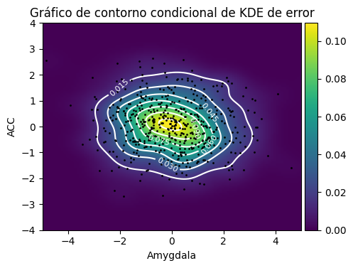 |
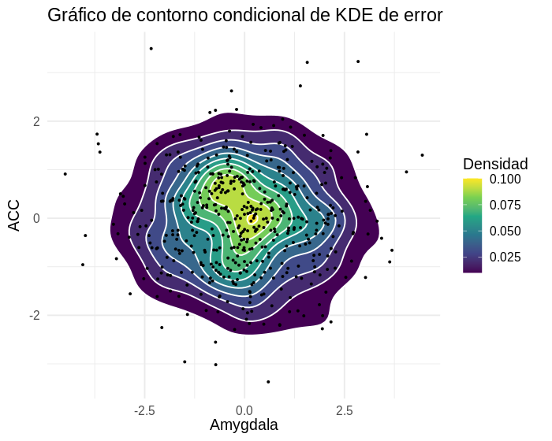 |
|---|---|
Gráfico generado en Python Utiliza la librería Matplotlib Las zonas amarillas indican mayor densidad (más probabilidad de error), mientras que las púrpuras son menos frecuentes. Los contornos ayudan a identificar transiciones suaves y agrupamientos. Los puntos muestran la distribución original de los datos. |
Gráfico generado en R Utiliza Ggplot2 El gráfico ofrece una estética más pulida por defecto. Las áreas de mayor densidad están bien definidas, y los contornos permiten una lectura clara de las transiciones. La gramática gráfica de ggplot2 facilita la construcción del gráfico con menos líneas de código. |
Interpretación
Las zonas amarillas indican mayor densidad (más probabilidad de error), mientras que las púrpuras son menos frecuentes. Los contornos ayudan a identificar transiciones suaves y agrupamientos. Los puntos muestran la distribución original de los datos.
Comparando las librerías en el segundo round
Aspecto |
Matplotlib (Python) |
ggplot2 (R) |
|---|---|---|
Estética por defecto |
Requiere ajustes manuales |
Pulida y coherente desde el inicio |
Versatilidad |
Altamente personalizable |
Muy expresivo con menos líneas |
Facilidad de uso |
Más técnico, requiere configuración |
Intuitivo para visualizaciones estadísticas |
Detalle técnico |
Control total sobre cada elemento |
Excelente para prototipos rápidos |
Documentación |
Extensa pero dispersa |
Clara y bien organizada |
Matplotlib es ideal cuando se necesita control absoluto sobre cada elemento visual, especialmente en contextos científicos o técnicos donde la personalización es clave.
ggplot2 brilla en entornos donde la rapidez, la estética y la coherencia visual son prioritarias, como en reportes estadísticos o exploración de datos.
Ambas herramientas son poderosas, y entender sus diferencias permite elegir la más adecuada según el tipo de proyecto, audiencia y nivel de detalle requerido.
Tercera ronda - gráfica de correlación «heatmap»#
En esta sección se compara la visualización de una matriz de correlación entre variables antropométricas simuladas.
El conjunto de variable representa medidas corporales similares al clásico “fat dataset”, incluyendo variables como porcentaje de grasa (brozek, siri), densidad corporal, edad, peso, altura y circunferencias de distintas partes del cuerpo.
Note
La matriz de correlación permite identificar relaciones lineales entre pares de variables, lo cual es útil para:
Detectar redundancias
Seleccionar variables predictivas
Comprender patrones fisiológicos
import pandas as pd
import matplotlib.pyplot as plt
# 1. Simular dataset antropométrico con nombres en español
np.random.seed(42) # Fija semilla para reproducibilidad
n = 250 # Define número de individuos a simular
# Crea DataFrame con 18 variables antropométricas simuladas
fat_es = pd.DataFrame({
"brozek": np.random.normal(20, 5, n), # Genera % grasa corporal método Brozek (media=20, desv=5)
"siri": np.random.normal(20, 5, n), # Genera % grasa corporal método Siri (media=20, desv=5)
"densidad": np.random.normal(1.05, 0.02, n), # Genera densidad corporal (media=1.05, desv=0.02)
"edad": np.random.normal(40, 12, n), # Genera edad en años (media=40, desv=12)
"peso": np.random.normal(180, 30, n), # Genera peso en libras (media=180, desv=30)
"estatura": np.random.normal(70, 3, n), # Genera estatura en pulgadas (media=70, desv=3)
"adiposo": np.random.normal(25, 4, n), # Genera masa grasa en kg (media=25, desv=4)
"masa_libre": np.random.normal(150, 25, n), # Genera masa libre de grasa (media=150, desv=25)
"cuello": np.random.normal(37, 3, n), # Genera circunferencia cuello en cm (media=37, desv=3)
"pecho": np.random.normal(100, 8, n), # Genera circunferencia pecho en cm (media=100, desv=8)
"abdomen": np.random.normal(90, 10, n), # Genera circunferencia abdomen en cm (media=90, desv=10)
"cadera": np.random.normal(95, 6, n), # Genera circunferencia cadera en cm (media=95, desv=6)
"muslo": np.random.normal(60, 6, n), # Genera circunferencia muslo en cm (media=60, desv=6)
"rodilla": np.random.normal(40, 4, n), # Genera circunferencia rodilla en cm (media=40, desv=4)
"tobillo": np.random.normal(22, 2, n), # Genera circunferencia tobillo en cm (media=22, desv=2)
"bíceps": np.random.normal(30, 3, n), # Genera circunferencia bíceps en cm (media=30, desv=3)
"antebrazo": np.random.normal(27, 3, n), # Genera circunferencia antebrazo en cm (media=27, desv=3)
"muñeca": np.random.normal(18, 1.5, n) # Genera circunferencia muñeca en cm (media=18, desv=1.5)
})
# 2. Graficar la matriz de correlación
corr = fat_es.corr() # Calcula matriz de correlación entre todas las variables
fig, ax = plt.subplots(figsize=(8, 8)) # Crea figura de 8x8 pulgadas
cax = ax.matshow(corr, cmap="viridis", vmin=-1, vmax=1) # Muestra matriz de correlación como mapa de calor con paleta viridis
# Ticks
ax.set_xticks(range(len(corr.columns))) # Establece posiciones de marcas en eje X
ax.set_yticks(range(len(corr.columns))) # Establece posiciones de marcas en eje Y
ax.set_xticklabels(corr.columns, rotation=45, ha="left", fontsize=9) # Etiquetas X rotadas 45°, tamaño 9
ax.set_yticklabels(corr.columns, fontsize=9) # Etiquetas Y, tamaño 9
# Barra de color
cb = fig.colorbar(cax, label="Correlación") # Añade barra de color a la figura
cb.ax.tick_params(labelsize=10) # Define tamaño de etiquetas de la barra de color
# Título
plt.title("Matriz de Correlación Antropométrica", fontsize=12, pad=20) # Título con tamaño 12 y separación 20
plt.show() # Muestra el gráfico
library(ggplot2) # Carga librería para gráficos avanzados
library(reshape2) # Carga librería para transformar datos (melt)
# Configurar tamaño del gráfico
options(repr.plot.width = 11, repr.plot.height = 11, repr.plot.res = 100) # Define ancho, alto y resolución
# Simular dataset antropométrico con nombres en español
set.seed(42) # Fija semilla para reproducibilidad
n <- 250 # Define número de individuos a simular
# Crea data frame con 18 variables antropométricas simuladas
fat_es <- data.frame(
brozek = rnorm(n, 20, 5), # Genera % grasa corporal Brozek (media=20, desv=5)
siri = rnorm(n, 20, 5), # Genera % grasa corporal Siri (media=20, desv=5)
densidad = rnorm(n, 1.05, 0.02), # Genera densidad corporal (media=1.05, desv=0.02)
edad = rnorm(n, 40, 12), # Genera edad en años (media=40, desv=12)
peso = rnorm(n, 180, 30), # Genera peso en libras (media=180, desv=30)
estatura = rnorm(n, 70, 3), # Genera estatura en pulgadas (media=70, desv=3)
adiposo = rnorm(n, 25, 4), # Genera masa grasa en kg (media=25, desv=4)
masa_libre = rnorm(n, 150, 25), # Genera masa libre de grasa (media=150, desv=25)
cuello = rnorm(n, 37, 3), # Genera circunferencia cuello en cm (media=37, desv=3)
pecho = rnorm(n, 100, 8), # Genera circunferencia pecho en cm (media=100, desv=8)
abdomen = rnorm(n, 90, 10), # Genera circunferencia abdomen en cm (media=90, desv=10)
cadera = rnorm(n, 95, 6), # Genera circunferencia cadera en cm (media=95, desv=6)
muslo = rnorm(n, 60, 6), # Genera circunferencia muslo en cm (media=60, desv=6)
rodilla = rnorm(n, 40, 4), # Genera circunferencia rodilla en cm (media=40, desv=4)
tobillo = rnorm(n, 22, 2), # Genera circunferencia tobillo en cm (media=22, desv=2)
bíceps = rnorm(n, 30, 3), # Genera circunferencia bíceps en cm (media=30, desv=3)
antebrazo = rnorm(n, 27, 3), # Genera circunferencia antebrazo en cm (media=27, desv=3)
muñeca = rnorm(n, 18, 1.5) # Genera circunferencia muñeca en cm (media=18, desv=1.5)
)
# Calcular matriz de correlación
corr <- cor(fat_es) # Calcula matriz de correlación entre todas las variables
melted_corr <- melt(corr) # Convierte matriz de formato ancho a formato largo para ggplot2
# Visualización con ggplot2
ggplot(data = melted_corr, aes(x = Var1, y = Var2, fill = value)) + # Define datos y mapeo estético
geom_tile(color = "white") + # Crea mosaico de rectángulos con bordes blancos
scale_fill_viridis_c(name = "Correlación", option = "viridis", limits = c(-1, 1)) + # Escala de color viridis continua de -1 a 1
theme_minimal(base_size = 20) + # Aplica tema minimalista con tamaño de fuente base 20
theme(
axis.text.x = element_text(angle = 45, hjust = 1, size = 18), # Etiquetas X rotadas 45°, tamaño 18
axis.text.y = element_text(size = 18), # Etiquetas Y, tamaño 18
panel.grid = element_blank() # Elimina líneas de cuadrícula
) +
labs(
title = "Matriz de Correlación Antropométrica", # Título del gráfico
x = "", # Sin etiqueta en eje X
y = "" # Sin etiqueta en eje Y
)
Gráficos#
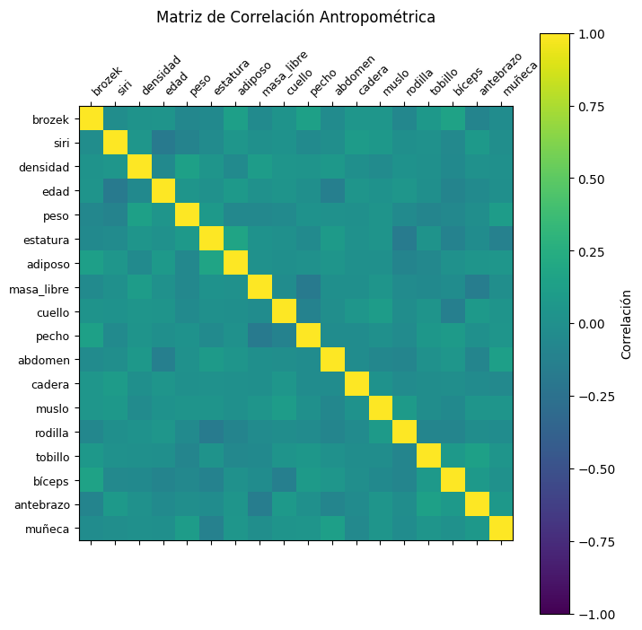 |
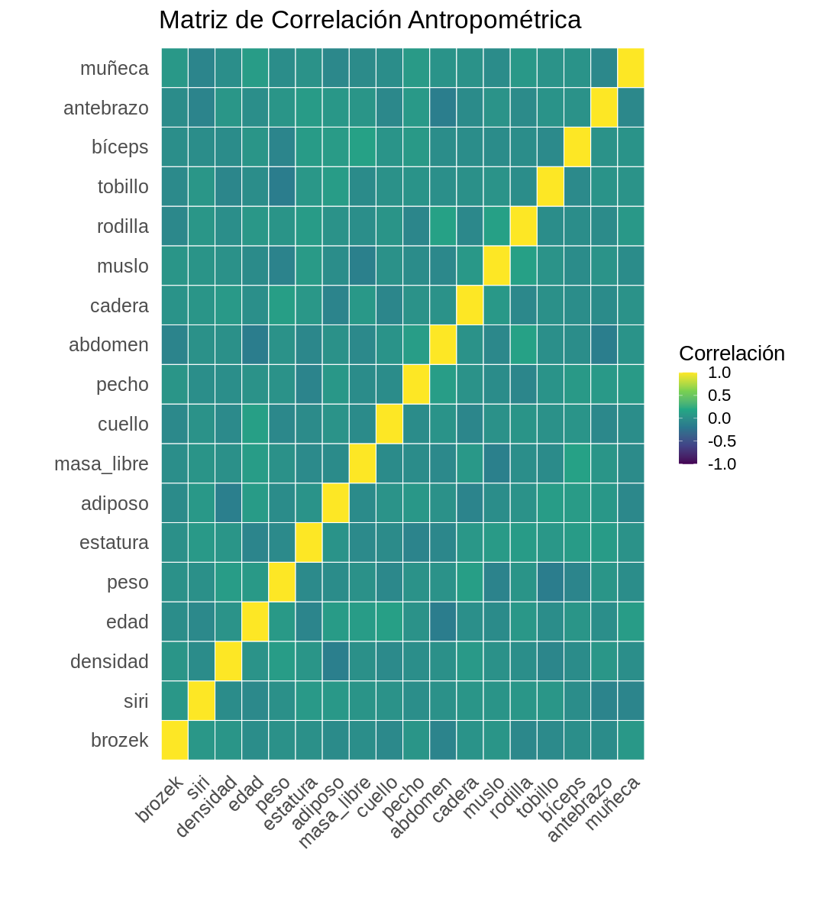 |
|---|---|
Gráfico generado en Python Utiliza la librería Matplotlib Cada celda representa el coeficiente de correlación entre dos variables. Los colores más brillantes (verde claro) indican correlaciones más fuertes, mientras que los oscuros (púrpura) indican correlaciones débiles o negativas. La diagonal principal siempre tiene valor 1, ya que cada variable se correlaciona perfectamente consigo misma. |
Gráfico generado en R Utiliza Ggplot2 El gráfico ofrece una estética más pulida por defecto. Las celdas están delineadas en blanco, y la paleta viridis se adapta automáticamente a los valores entre -1 y 1. La gramática gráfica de ggplot2 permite construir el gráfico de forma declarativa, lo que facilita su personalización y extensión. |
Comparando las librerías en la tercera ronda
Concepto |
Matplotlib (Python) |
ggplot2 (R) |
|---|---|---|
Estética por defecto |
Básica y técnica; requiere ajustes manuales para lograr una presentación pulida |
Elegante desde el inicio; ideal para informes y publicaciones |
Versatilidad |
Altamente personalizable; permite control total sobre cada elemento visual |
Muy expresivo con menos líneas de código; excelente para gráficos estadísticos |
Facilidad de uso |
Requiere conocimiento detallado de funciones y configuración |
Sintaxis declarativa facilita la construcción rápida de gráficos complejos |
Detalle técnico |
Precisión absoluta en cada componente; ideal para visualizaciones científicas |
Menos granular pero suficientemente detallado para análisis exploratorios |
Documentación |
Extensa pero dispersa; requiere búsqueda activa en múltiples fuentes |
Clara, estructurada y con ejemplos integrados en la comunidad tidyverse |
Resaltando el contraste entre las librerías:
Matplotlib: Prioriza el control absoluto y la personalización. Es la herramienta ideal para contextos científicos o técnicos donde cada elemento visual debe ser ajustado meticulosamente.ggplot2: Prioriza la rapidez, la estética coherente y la narrativa visual. se especializa en análisis estadístico y exploración de datos, donde la generación de gráficos consistentes y elegantes de forma eficiente es clave.
En esencia, la brecha radica en la flexibilidad y control total (Matplotlib) versus productividad y estética predefinida (ggplot2). La elección no es sobre cuál es mejor, sino sobre qué enfoque es más adecuado para el tipo de proyecto, la audiencia y el nivel de detalle requerido.
Cuarta ronda - gráfica de líneas y puntos «Regresión líneal»#
Se utilizó el conjunto de datos Iris para generar un gráfico multilínea. Este muestra los puntos y las líneas de regresión del ancho del sépalo, usando su longitud como variable predictiva, agrupadas por especie.
Note
el gráfico permite identificar si existen patrones morfológicos únicos y consistentes para cada especie en las variables analizadas, y evaluar si estas variables son útiles para clasificar o discriminar entre ellas. Es un primer paso visual fundamental antes de realizar pruebas estadísticas formales para comparar las regresiones.
# Importación de librerías necesarias
import matplotlib.pyplot as plt # Para crear gráficos y visualizaciones
import numpy as np # Para operaciones matemáticas y arrays
import pandas as pd # Para manejo de datos tabulares
from sklearn.datasets import load_iris # Para cargar el dataset de Iris
# Preparación y carga de datos
# Cargar el famoso dataset de Iris desde sklearn
iris_data = load_iris()
# Crear un DataFrame de pandas con los datos numéricos
# Las columnas serán: sepal length, sepal width, petal length, petal width
iris1 = pd.DataFrame(iris_data.data, columns=iris_data.feature_names)
# Agregar una columna 'species' con los nombres de las especies
# iris_data.target contiene números (0,1,2), los convertimos a nombres reales
iris1['species'] = iris_data.target_names[iris_data.target]
# Agrupación de datos por especie
# Agrupar el dataset por especie para analizar cada una por separado
groups = iris1.groupby("species")
# Configuración del gráfico
# Modifica la figura de tamaño para mejor visualización en pulgadas
plt.figure(figsize=(3.5, 3.5))
# Definir colores específicos para cada especie
# Esto asegura consistencia visual y mejor diferenciación
colors = {
'setosa': 'darkviolet', # Violeta oscuro
'versicolor': 'cornflowerblue', # Azul aciano
'virginica': 'orchid' # Orquídea
}
# Creación del scatter plot con líneas de regresión
# Iterar sobre cada grupo de especies
for name, group in groups:
# PASO 1: Crear scatter plot (puntos) para cada especie
plt.plot(group["sepal length (cm)"], group["sepal width (cm)"],
marker="o", # Usar círculos como marcadores
linestyle="", # Sin líneas conectando puntos
label=name, # Etiqueta para la leyenda
ms=2, # Tamaño del marcador (marker size)
color=colors[name], # Color específico de la especie
alpha=.8) # Transparencia (80% opaco)
# PASO 2: Calcular regresión lineal para mostrar tendencia
# np.polyfit calcula los coeficientes de un polinomio de grado 1 (línea recta)
# m = pendiente, b = intersección con el eje y
m, b = np.polyfit(group["sepal length (cm)"], group["sepal width (cm)"], 1)
# PASO 3: Dibujar la línea de regresión
# Usar la ecuación y = mx + b para calcular los puntos de la línea
plt.plot(group["sepal length (cm)"],
m * group["sepal length (cm)"] + b, # Ecuación de la recta
linewidth=1, # Grosor de la línea
color=colors[name], # Mismo color que los puntos
alpha=.5) # Más transparente (50% opaco)
# Personalización y finalización del gráfico
plt.legend(fontsize=7, # Tamaño texto de la leyenda
title_fontsize=8, # Tamaño título de la leyenda
title='Especies') # Mostrar leyenda con los nombres de especies
plt.title('Clasificación de especies Iris') # Título del gráfico
plt.xlabel('Largo del Sépalo (cm)') # Etiqueta del eje X
plt.ylabel('Ancho del Sépalo (cm)') # Etiqueta del eje Y
plt.grid(True, alpha=0.2) # Agregar cuadrícula sutil
plt.tight_layout() # Ajustar automáticamente el layout
plt.show() # Mostrar el gráfico
# Cargar librerías necesarias
library(ggplot2) # Grammar of Graphics - el corazón de la visualización
library(dplyr) # Para manipulación de datos (pipe %>%, group_by, etc.)
library(datasets) # Contiene el dataset iris precargado en R
options(repr.plot.width = 12.5, repr.plot.height = 12.6, repr.plot.res = 100) # define el tamaño del gráfico
# Definir paleta de colores personalizada
# Crear un vector nombrado con colores específicos para cada especie
custom_colors <- c(
"setosa" = "darkviolet", # Violeta oscuro
"versicolor" = "cornflowerblue", # Azul aciano
"virginica" = "orchid" # Orquídea
)
# Creación del gráfico con ggplot2
# ggplot2 usa la "Grammar of Graphics" - construimos el gráfico por capas
iris_plot <- iris %>% # Usar pipe operator para claridad
ggplot(aes(x = Sepal.Length, # Mapear variables a estética
y = Sepal.Width, # x = longitud sépalo, y = ancho sépalo
color = Species)) + # Color por especie
# CAPA 1: Puntos (scatter plot)
geom_point(aes(fill = Species), # Puntos con relleno por especie
size = 6, # Tamaño de puntos (equivale a ms=10 en matplotlib)
alpha = 0.8, # Transparencia (80% opaco)
shape = 21, # Forma 21 = círculos con borde y relleno
stroke = 1.5) + # Grosor del borde
# CAPA 2: Líneas de regresión lineal
geom_smooth(method = "lm", # method = "lm" significa regresión lineal
se = TRUE, # se = FALSE quita el área de confianza
size = 4, # Grosor de línea (equivale a linewidth=5)
alpha = 0.3) + # Transparencia de las líneas
# CAPA 3: Personalización de colores
scale_color_manual(values = custom_colors) + # Colores para bordes y líneas
scale_fill_manual(values = custom_colors) + # Colores para relleno de puntos
# CAPA 4: Etiquetas y títulos
labs(title = "Iris Species Classification", # Título principal
subtitle = "Relación entre longitud y ancho del sépalo por especie", # Subtítulo
x = "Sepal Length (cm)", # Etiqueta eje X
y = "Sepal Width (cm)", # Etiqueta eje Y
color = "Species", # Título de leyenda
fill = "Species", # Título de leyenda (fill)
caption = "Dataset: Iris de R datasets") + # Pie de página
# CAPA 5: Tema y personalización visual
theme_minimal() + # Tema limpio y moderno
theme(
plot.title = element_text(size = 30, # Tamaño título
face = "bold", # Texto en negrita
hjust = 0.5), # Centrar título
plot.subtitle = element_text(size = 28, # Tamaño subtítulo
hjust = 0.5, # Centrar subtítulo
color = "gray40"), # Color gris
axis.text.x = element_text(angle = 0, hjust = 1, size = 28), # Tamaño aumentado para eje X
axis.text.y = element_text(size = 28), # Tamaño aumentado para eje Y
axis.title.x = element_text(size = 26, face = "bold"), # Título eje X
axis.title.y = element_text(size = 26, face = "bold"), # Título eje Y
legend.title = element_text(size = 24, face = "bold"), # Título de la leyenda
legend.text = element_text(size = 24), # Texto de los items de la leyenda
legend.position = "bottom", # Leyenda en la parte inferior
panel.grid.minor = element_blank(), # Quitar cuadrícula menor
axis.title = element_text(face = "bold"), # Títulos de ejes en negrita
plot.background = element_rect(fill = "white", color = NA), # Fondo blanco
panel.background = element_rect(fill = "white", color = NA) # Panel blanco
)
# Mostrar el gráfico
iris_plot
Gráficos#
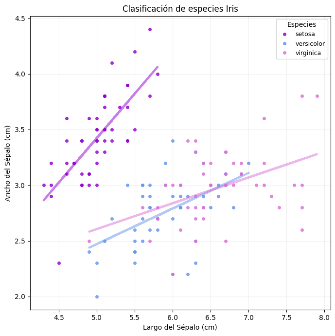 |
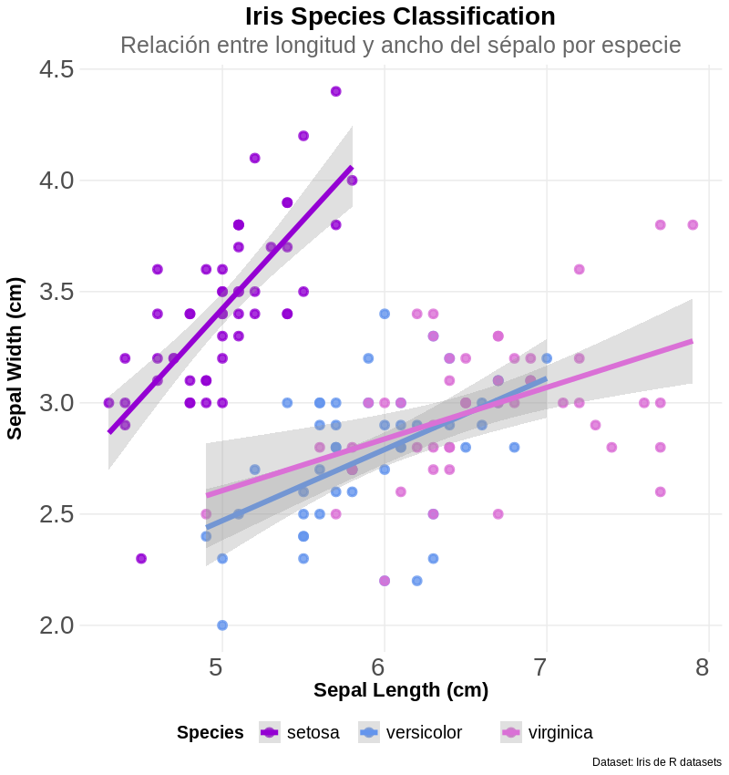 |
|---|---|
Gráfico generado en Python Utiliza la librería Matplotlib Presenta limitaciones, ya que no puede crear dicha banda de confianza de manera inherente. |
Gráfico generado en R Utiliza Ggplot2 Se destaca por generar de forma sencilla la banda de confianza (región sombreada). |
Comparando las librerías en la tercera ronda
Concepto |
Matplotlib (Python) |
ggplot2 (R) |
|---|---|---|
Estética por defecto |
Básica y técnica; requiere configuración manual para agrupación y colores |
Elegante y coherente; maneja automáticamente colores y agrupaciones por especie |
Bandas de confianza |
Requiere cálculo manual o uso de Seaborn; implementación compleja |
Integradas nativamente con |
Agrupación por especie |
Codificación manual necesaria para colores, marcadores y leyendas |
Automática mediante |
Sintaxis para regresión |
Cálculo manual de coeficientes o uso de |
Declarativa con |
Personalización |
Control granular absoluto sobre cada elemento visual |
Sistema de temas coherente; personalización mediante capas adicionales |
Leyendas e identificación |
Configuración manual requerida para leyendas de colores y especies |
Generación automática y posicionamiento inteligente de leyendas |
Contraste Específico para Gráficos de Regresión Multilínea
Matplotlib: Enfoque de precisión con multiples opciones de configuraciónVentaja: Control absoluto sobre la ubicación, estilo y formato de cada elemento del gráfico.
Desafío: Requiere múltiples pasos manuales para agrupar datos por especie y calcular regresiones individuales.
ggplot2: Enfoque de Expresividad EstadísticaVentaja: Sintaxis intuitiva donde
aes(color=species) + geom_smooth(method="lm")genera el gráfico completo con bandas de confianza.Fortaleza: Integración nativa con conceptos estadísticos como intervalos de confianza y agrupaciones.
Quinta Ronda - gráfico polar#
Los gráficos polares presentan desafíos significativos en visualización de datos:
Dificultad de interpretación: Complicados de descifrar y no transmiten información eficientemente
Objetivo incumplido: La visualización debe priorizar la legibilidad, meta difícil de alcanzar con este formato
Note
el gráfico permite identificar el rendimiento del combustible en millas por galón de diferentes marcas de automovil.
import matplotlib.pyplot as plt # Librería principal para crear gráficos
import numpy as np # Para operaciones matemáticas y arrays
import pandas as pd # Para manipulación de datos tabulares
import seaborn as sns # Para acceder a datasets de ejemplo
# Cargar y preparar los datos
cars = sns.load_dataset('mpg') # Cargar dataset de coches desde seaborn
# Limpieza de datos
cars_clean = cars.dropna().drop_duplicates(subset=['name']) # Eliminar filas con valores nulos y coches duplicados
# Seleccionar muestra de autos
cars_sample = cars_clean.sample(n=10, random_state=42).sort_values('mpg') # Tomar 10 coches aleatorios, semilla=42 para reproducibilidad, ordenar por MPG
# Configuración del gráfico polar
fig, ax = plt.subplots(figsize=(5, 5), subplot_kw=dict(projection='polar')) # Crear figura 5x5 con proyección polar (circular)
# Cálculos para posicionamiento angular
n_cars = len(cars_sample) # Contar número de coches en la muestra
angles = np.linspace(0, 2 * np.pi, n_cars, endpoint=False) # Distribuir coches uniformemente en círculo completo (360°)
# Extraer valores de eficiencia
mpg_values = cars_sample['mpg'].values # Obtener valores de millas por galón como array numpy
# Generar colores degradados
colors = plt.cm.viridis_r(np.linspace(0.1, 0.9, n_cars)) # Crear colores de amarillo (alta eficiencia) a violeta (baja eficiencia)
# Crear las barras radiales
bar_width = 2 * np.pi / n_cars * 1.2 # Calcular ancho de cada barra (1.2 factor para que se toquen ligeramente)
bars = ax.bar(angles, # Posiciones angulares donde van las barras
mpg_values, # Alturas de las barras (valores de MPG)
width=bar_width, # Ancho de cada barra
color=colors, # Colores degradados calculados arriba
alpha=0.8, # Transparencia (80% opaco)
edgecolor='white', # Bordes blancos para separar barras
linewidth=0.5) # Grosor de los bordes
# Añadir nombres de coches como etiquetas HORIZONTALES
label_radius = max(mpg_values) + 5 # Posición radial para etiquetas (5 unidades más allá de la barra más alta)
car_names = cars_sample['name'].values # Obtener nombres de los coches como array
# Bucle para colocar cada etiqueta
for angle, name, mpg_val in zip(angles, car_names, mpg_values):
# Colocar etiqueta de texto SIEMPRE HORIZONTAL
ax.text(angle, # Posición angular
label_radius, # Posición radial (distancia del centro)
name, # Texto a mostrar (nombre del coche)
rotation=0, # SIN ROTACIÓN - siempre horizontal
ha='center', # Alineación horizontal centrada
va='center', # Alineación vertical centrada
fontsize=7, # Tamaño de fuente pequeño para que quepa
color='black') # Color del texto
# Personalización visual del gráfico
ax.set_title('Gráfica polar datos de carros\n(Millas por galón)', # Título principal con salto de línea
pad=20, # Espacio entre título y gráfico
fontsize=10, # Tamaño de fuente del título
fontweight='bold', # Título en negrita
color='black') # Color del título
# Configurar escala radial
ax.set_ylim(0, max(mpg_values) + 8) # Establecer límites del eje radial (desde 0 hasta máximo MPG + 8)
# Configurar grilla y orientación
ax.grid(True, alpha=0.3, linestyle='-', linewidth=0.5) # Mostrar grilla sutil (30% transparente, líneas finas)
ax.set_theta_zero_location('N') # Establecer 0° en la parte superior (Norte)
ax.set_theta_direction(-1) # Dirección horaria (sentido de las agujas del reloj)
# Configurar etiquetas de los círculos concéntricos
ax.set_rlabel_position(0) # Posición de las etiquetas radiales en 0° (arriba)
ax.set_ylabel('mpg', # Etiqueta del eje radial
rotation=0, # Sin rotación
labelpad=15, # Espacio entre etiqueta y eje
fontsize=8, # Tamaño de fuente
fontweight='bold') # En negrita
# Configurar marcas numéricas en círculos concéntricos
yticks = np.arange(0, max(mpg_values) + 5, 5) # Crear marcas cada 5 unidades desde 0 hasta máximo+5
ax.set_yticks(yticks) # Establecer posiciones de las marcas
ax.set_yticklabels([f'{int(y)}' for y in yticks], fontsize=10) # Convertir a enteros y establecer tamaño de fuente
ax.set_thetagrids([]) # Quitar etiquetas angulares (grados) para mayor limpieza
# Crear barra de colores para referencia
sm = plt.cm.ScalarMappable(cmap='viridis_r', # Usar el mismo mapa de colores que las barras
norm=plt.Normalize(vmin=min(mpg_values), # Valor mínimo de la escala
vmax=max(mpg_values))) # Valor máximo de la escala
sm.set_array([]) # Necesario para matplotlib (array vacío)
# Posicionar y configurar la barra de colores
cbar = plt.colorbar(sm, # Objeto ScalarMappable creado arriba
ax=ax, # Asociar con el eje principal
pad=0.1, # Separación del gráfico principal
shrink=0.8) # Reducir altura al 80%
cbar.set_label('mpg', # Etiqueta de la barra de colores
rotation=0, # Sin rotación
labelpad=10, # Espacio entre etiqueta y barra
fontsize=8, # Tamaño de fuente
fontweight='bold') # En negrita
cbar.ax.tick_params(labelsize=10) # Tamaño de fuente de los números en la barra
# Ajustar diseño y mostrar
plt.tight_layout() # Ajustar automáticamente el espaciado para evitar solapamientos
plt.show()
# Polar Bar Chart Simplificado con ggplot2
# Versión minimalista y elegante
library(ggplot2)
# Preparar datos del dataset mtcars (ya viene en R)
mtcars$car <- rownames(mtcars) # Convertir nombres de filas en columna
options(repr.plot.width = 8, repr.plot.height = 7.5, repr.plot.res = 100) # define el tamaño del gráfico
# Configurar tema base
theme_set(theme_bw())
# Versión con título
p_final <- ggplot(mtcars, aes(x = car, y = mpg, fill = mpg)) +
geom_col(width = 1, color = "white") +
coord_polar() +
scale_fill_viridis_c(option = 'C', alpha = .8) +
labs(title = "Gráfica polar datos de carros",
subtitle = "Millas por galón") +
theme_minimal(base_size = 13) +
theme(
plot.title = element_text(hjust = 0.5, face = "bold"),
plot.subtitle = element_text(hjust = 0.5),
axis.text.y = element_text(size = 18), # Tamaño aumentado para eje Y
axis.title.x = element_text(size = 16, face = "bold"), # Título eje X
axis.title.y = element_text(size = 16, face = "bold"), # Título eje Y
axis.text.x = element_text(size = 10)
)
print(p_final)
Gráficos#
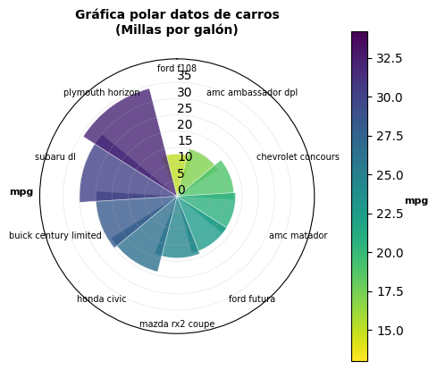 |
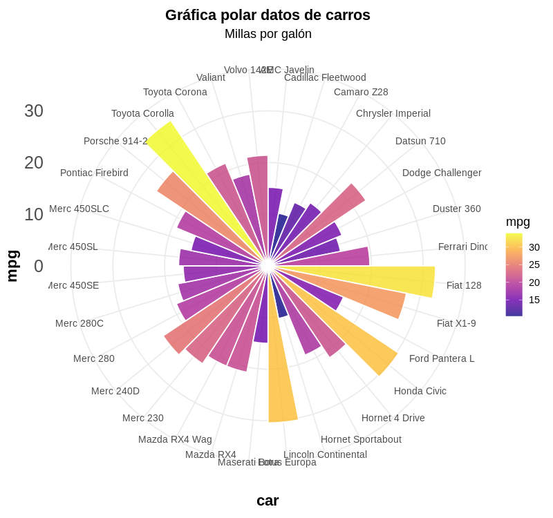 |
|---|---|
Gráfico generado en Python Utiliza la librería Matplotlib Es un medio muy complejo para hacer esta gráfica, organizar las etiquetas en un entorno circular. |
Gráfico generado en R Utiliza Ggplot2 Los elementos de la gráfica se adaptan muy facilmente a su forma. |
Comparando las librerías en la quinta ronda
Criterio |
Mejor opción |
Justificación |
|---|---|---|
Versatilidad |
Matplotlib |
Control total sobre personalización |
Facilidad |
ggplot2 |
lenguaje más intuitivo |
Detalle Técnico |
Matplotlib |
Acceso completo a transformaciones |
Documentación |
ggplot2 |
Más clara y mejor estructurada |
Productividad |
ggplot2 |
Resultados más rápidos |
Contraste y recomendaciones entre las librerías
Exploración inicial: Usa ggplot2 para prototipado rápido
Análisis detallado: Matplotlib para control fino
Presentaciones: ggplot2 para consistencia visual
Publicaciones: Matplotlib para calidad máxima
Sexta ronda - gráfica de cajas y alambres «Boxplot»#
Los gráficos de cajas y alambres se utilizan para visualizar distribución, asimetria y puntos atípicos.
Se reproduce la temática del mismo dataset que en la ronda número 3 El fatdataset con medidas antromometricas
import numpy as np # Cargar numpy para números y matemáticas
import pandas as pd # Cargar pandas para manejar tablas de datos
import matplotlib.pyplot as plt # Cargar matplotlib para hacer gráficos
# 1. Simular dataset antropométrico con nombres en español
np.random.seed(42) # Fijar semilla para que salgan siempre los mismos números aleatorios
n = 250 # Crear 250 personas
fat_es = pd.DataFrame({ # Crear una tabla (DataFrame) con datos
"brozek": np.random.normal(20, 5, n), # Crear 250 números aleatorios, promedio 20
"siri": np.random.normal(20, 5, n), # Crear 250 números aleatorios, promedio 20
"densidad": np.random.normal(1.05, 0.02, n), # Crear 250 números aleatorios, promedio 1.05
"edad": np.random.normal(40, 12, n), # Crear 250 edades, promedio 40 años
"peso": np.random.normal(180, 30, n), # Crear 250 pesos, promedio 180 libras
"estatura": np.random.normal(70, 3, n), # Crear 250 estaturas, promedio 70 pulgadas
"adiposo": np.random.normal(25, 4, n), # Crear 250 números, promedio 25
"masa_libre": np.random.normal(150, 25, n), # Crear 250 números, promedio 150
"cuello": np.random.normal(37, 3, n), # Crear 250 medidas de cuello, promedio 37 cm
"pecho": np.random.normal(100, 8, n), # Crear 250 medidas de pecho, promedio 100 cm
"abdomen": np.random.normal(90, 10, n), # Crear 250 medidas de abdomen, promedio 90 cm
"cadera": np.random.normal(95, 6, n), # Crear 250 medidas de cadera, promedio 95 cm
"muslo": np.random.normal(60, 6, n), # Crear 250 medidas de muslo, promedio 60 cm
"rodilla": np.random.normal(40, 4, n), # Crear 250 medidas de rodilla, promedio 40 cm
"tobillo": np.random.normal(22, 2, n), # Crear 250 medidas de tobillo, promedio 22 cm
"bíceps": np.random.normal(30, 3, n), # Crear 250 medidas de bíceps, promedio 30 cm
"antebrazo": np.random.normal(27, 3, n), # Crear 250 medidas de antebrazo, promedio 27 cm
"muñeca": np.random.normal(18, 1.5, n) # Crear 250 medidas de muñeca, promedio 18 cm
})
# Configuración general para gráficos
plt.style.use('default') # Usar estilo por defecto de matplotlib
plt.rcParams['figure.figsize'] = (12, 8) # Definir tamaño base de gráficos: 12 ancho x 8 alto
plt.rcParams['font.size'] = 10 # Definir tamaño base de letra: 10 puntos
# ========================================
# OPCIÓN 1: Boxplot de todas las variables
# ========================================
plt.figure(figsize=(6, 4.2)) # Crear nueva figura con tamaño 6 ancho x 4.2 alto
box_data = [fat_es[col] for col in fat_es.columns] # Crear lista con datos de cada columna
labels = fat_es.columns # Obtener nombres de las columnas para etiquetas
bp = plt.boxplot(box_data, labels=labels) # Crear boxplot con los datos y etiquetas
plt.title('Distribución de Variables Antropométricas', fontsize=16, fontweight='bold') # Título grande y negrita
plt.xlabel('Variables', fontweight='bold') # Etiqueta eje X en negrita
plt.ylabel('Valores', fontweight='bold') # Etiqueta eje Y en negrita
plt.xticks(rotation=45, ha='right') # Rotar nombres de variables 45°, alinear a la derecha
plt.grid(True, alpha=0.3) # Poner rejilla suave (transparencia 0.3)
plt.tight_layout() # Ajustar automáticamente el espacio entre elementos
plt.show() # Mostrar el gráfico
# Cargar librerías necesarias
library(ggplot2) # Para hacer gráficos bonitos
library(tidyr) # Para organizar datos
library(dplyr) # Para manipular datos
# 1. Simular dataset antropométrico con nombres en español
set.seed(42) # Para que siempre salgan los mismos números aleatorios
n <- 250 # Crear 250 personas
fat_es <- data.frame(
brozek = rnorm(n, 20, 5), # Crear 250 números aleatorios, promedio 20
siri = rnorm(n, 20, 5), # Crear 250 números aleatorios, promedio 20
densidad = rnorm(n, 1.05, 0.02), # Crear 250 números aleatorios, promedio 1.05
edad = rnorm(n, 40, 12), # Crear 250 edades, promedio 40 años
peso = rnorm(n, 180, 30), # Crear 250 pesos, promedio 180 libras
estatura = rnorm(n, 70, 3), # Crear 250 estaturas, promedio 70 pulgadas
adiposo = rnorm(n, 25, 4), # Crear 250 números, promedio 25
masa_libre = rnorm(n, 150, 25), # Crear 250 números, promedio 150
cuello = rnorm(n, 37, 3), # Crear 250 medidas de cuello, promedio 37 cm
pecho = rnorm(n, 100, 8), # Crear 250 medidas de pecho, promedio 100 cm
abdomen = rnorm(n, 90, 10), # Crear 250 medidas de abdomen, promedio 90 cm
cadera = rnorm(n, 95, 6), # Crear 250 medidas de cadera, promedio 95 cm
muslo = rnorm(n, 60, 6), # Crear 250 medidas de muslo, promedio 60 cm
rodilla = rnorm(n, 40, 4), # Crear 250 medidas de rodilla, promedio 40 cm
tobillo = rnorm(n, 22, 2), # Crear 250 medidas de tobillo, promedio 22 cm
bíceps = rnorm(n, 30, 3), # Crear 250 medidas de bíceps, promedio 30 cm
antebrazo = rnorm(n, 27, 3), # Crear 250 medidas de antebrazo, promedio 27 cm
muñeca = rnorm(n, 18, 1.5) # Crear 250 medidas de muñeca, promedio 18 cm
)
options(repr.plot.width = 8, repr.plot.height = 6, repr.plot.res = 100) # Definir tamaño del gráfico
# Transformar datos a formato largo (long format)
fat_es_long <- fat_es %>% # Tomar los datos y pasarlos al siguiente paso
pivot_longer(cols = everything(), # Convertir todas las columnas en filas
names_to = "variable", # Los nombres van a la columna "variable"
values_to = "valor") # Los valores van a la columna "valor"
# Crear el boxplot con ggplot2
p1 <- ggplot(fat_es_long, aes(x = variable, y = valor)) + # Empezar el gráfico
geom_boxplot() + # Añadir las cajas del boxplot
labs( # Poner títulos
title = "Distribución de Variables Antropométricas", # Título principal
x = "Variables", # Título del eje X
y = "Valores" # Título del eje Y
) +
theme_minimal(base_size = 20) + # Usar estilo limpio, letra tamaño 20
theme( # Personalizar el estilo
plot.title = element_text(size = 20, face = "bold", hjust = 0.5), # Título grande, negrita, centrado
axis.text.x = element_text(angle = 45, hjust = 1, face = "bold"), # Rotar nombres 45°, negrita
axis.text.y = element_text(face = "bold"), # Números del eje Y en negrita
axis.title.x = element_text(face = "bold"), # Título eje X en negrita
axis.title.y = element_text(face = "bold") # Título eje Y en negrita
)
print(p1) # Mostrar el gráfico
Gráficos#
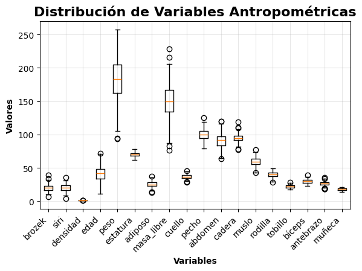 |
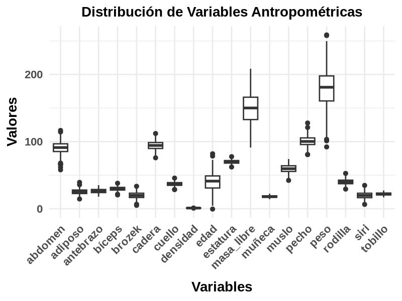 |
|---|---|
Gráfico generado en Python Utiliza la librería Matplotlib Requiere ajustes manuales para organizar etiquetas y diseño; útil pero menos intuitivo para gráficos complejos. |
Gráfico generado en R Utiliza Ggplot2 Adapta automáticamente los elementos visuales, facilitando una presentación clara con menos esfuerzo técnico. |
Importante
Al comparar distribuciones mediante diagramas de cajas y alambres (boxplots), especialmente cuando se utilizan librerías como Matplotlib en Python y ggplot2 en R, es fundamental ir más allá del aspecto estético o técnico de los gráficos. En este caso, los datos representan variables en unidades heterogéneas: pulgadas, porcentajes y libras. Esta mezcla puede inducir a interpretaciones erróneas si no se toman precauciones.
Riesgos de mezclar unidades
Las escalas numéricas no reflejan magnitudes comparables.
Las cajas pueden parecer más “anchas” o “estrechas” por razones puramente unitarias.
El lector puede asumir que las variables están en la misma escala, lo que distorsiona el análisis.
Preprocesamiento recomendado
Antes de graficar, es esencial aplicar técnicas de normalización o estandarización:
Normalización (x - xmin/xmax - xmin): útil si se desea conservar la forma de la distribución en una escala común (0 a 1).
Estandarización (Z-score): ideal para comparar dispersión y posición relativa (media = 0, desviación estándar = 1).
Esto permite que los boxplots reflejen patrones comparativos reales, no diferencias arbitrarias de unidades.
Comparando las librerías en la sexta ronda
Criterio |
Matplotlib (Python) |
ggplot2 (R) |
|---|---|---|
Flexibilidad |
Alta, pero requiere más código |
Alta, con sintaxis más declarativa |
Personalización |
Detallada, pero manual |
Intuitiva con capas ( |
Integración con datos |
Ideal con |
Fluida con |
Estética por defecto |
Más básica |
Más pulida y coherente |
Curva de aprendizaje |
Moderada, requiere manejo de objetos |
Suave si se domina la gramática de gráficos |
Documentación y comunidad |
Amplia y activa |
Muy sólida y orientada a estadística |
Septima ronda - gráfico en 3D#
A continuación se desarrolla un gráfico de superficie en 3D en las librerías matplotlib y ggplot2 con datos simulados.
import numpy as np # Librería para operaciones matemáticas y arrays
import matplotlib.pyplot as plt # Librería para gráficos 2D y 3D
from mpl_toolkits.mplot3d import Axes3D # Extensión para gráficos 3D
# Configurar el estilo de matplotlib
plt.style.use('default') # Usar el estilo visual por defecto
fig = plt.figure(figsize=(20, 18)) # Crear figura con tamaño 20x18 pulgadas
# Crear datos simulados
x = np.linspace(-5, 5, 50) # Array de 50 valores entre -5 y 5
y = np.linspace(-5, 5, 50) # Array de 50 valores entre -5 y 5
X, Y = np.meshgrid(x, y) # Crear malla 2D: matrices 50x50 para coordenadas
# 3. Paraboloide hiperbólico (silla de montar)
ax3 = fig.add_subplot(2, 2, 3, projection='3d') # Crear subgráfico 3D en posición 3 de grid 2x2
Z3 = X**2 - Y**2 # Calcular valores Z: función silla de montar
surface3 = ax3.plot_surface(X, Y, Z3, cmap='coolwarm', alpha=0.8, # Crear superficie 3D
linewidth=0, antialiased=True) # Sin líneas, suavizado activado
ax3.set_title('Paraboloide Hiperbólico (Silla de Montar)') # Título del gráfico
ax3.set_xlabel('X') # Etiqueta eje X
ax3.set_ylabel('Y') # Etiqueta eje Y
ax3.set_zlabel('Z') # Etiqueta eje Z
fig.colorbar(surface3, ax=ax3, shrink=0.5, aspect=10) # Barra de colores: 50% tamaño, proporción 10:1
# Cargar solo las librerías esenciales
library(ggplot2) # Para todos los gráficos
library(dplyr) # Para manipulación de datos (solo pipe y funciones básicas)
# Crear datos simulados (equivalente a numpy.linspace y meshgrid)
x <- seq(-5, 5, length.out = 50) # Vector de 50 valores entre -5 y 5
y <- seq(-5, 5, length.out = 50) # Vector de 50 valores entre -5 y 5
# Crear malla de datos (equivalente a meshgrid)
grid <- expand.grid(X = x, Y = y) # Todas las combinaciones de x e y
# Calcular función paraboloide hiperbólico Z = X² - Y²
grid$Z <- grid$X^2 - grid$Y^2 # Función silla de montar
# ===== MÉTODO 1: Mapa de calor estilo matplotlib =====
cat("Creando mapa de calor que simula superficie 3D...\n")
# Replicar colores 'coolwarm' de matplotlib manualmente
coolwarm_colors <- c("#3A4CC0", "#6788EE", "#9ABBFF", "#C9D7F0",
"#F0F0F0", "#F5B895", "#F08160", "#DC143C")
surface_plot <- ggplot(grid, aes(x = X, y = Y, fill = Z)) +
geom_tile() + # Crear mapa de calor (simula superficie)
scale_fill_gradient2( # Paleta divergente tipo coolwarm
low = "#3A4CC0", # Azul para valores negativos
mid = "#F0F0F0", # Blanco para Z=0
high = "#DC143C", # Rojo para valores positivos
midpoint = 0, # Punto medio en Z=0
name = "Z", # Nombre de la leyenda
guide = guide_colorbar( # Personalizar barra de colores
barwidth = 1, # Ancho de la barra
barheight = 6, # Alto de la barra
title.position = "top" # Posición del título
)
) +
labs(
title = "Paraboloide Hiperbólico (Silla de Montar)",
subtitle = "Superficie 3D representada como mapa de calor",
x = "X", # Etiqueta eje X
y = "Y", # Etiqueta eje Y
caption = "Z = X² - Y²" # Fórmula matemática
) +
theme_minimal() + # Tema base limpio
theme(
plot.title = element_text(size = 14, hjust = 0.5, face = "bold"),
plot.subtitle = element_text(size = 11, hjust = 0.5, color = "gray30"),
axis.title = element_text(size = 12),
legend.title = element_text(size = 11),
panel.grid = element_blank(), # Quitar grilla
aspect.ratio = 1 # Mantener proporciones cuadradas
)
print(surface_plot)
Gráficos#
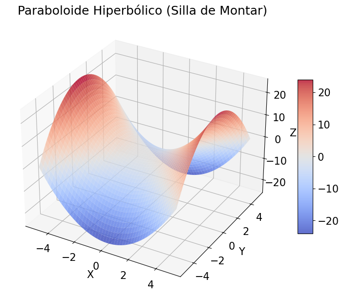 |
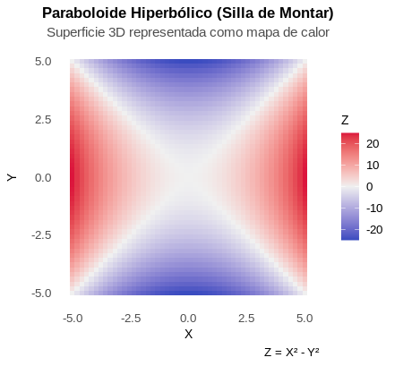 |
|---|---|
Gráfico generado en Python Utiliza la librería Matplotlib Gráfico 3D nativo con plot_surface(). Perspectiva real en 3 dimensiones. |
Gráfico generado en R Utiliza Ggplot2 En su forma estándar solo soporta 2D simula efecto 3D con mapas de calor, contornos y gradientes de color, sin capacidades 3D verdaderas. |
Comparando las librerías en la séptima ronda
Haciendo un esfuerzo extra la librería matplotlib puede renderizar gráficas en 3D, en contraste, en R se puede construir pero con apoyo de otras librerías como plotly.
Nota - Resultados de la comparación:
📌 Aunque ggplot2 supera ligeramente a Matplotlib en la comparación final, la elección ideal depende del contexto, del lenguaje de programación preferido y del tipo de usuario. Lo importante es que ambos permiten construir visualizaciones potentes si se usan con criterio técnico y comunicativo.
Comparativa por tipo de gráfico: Matplotlib vs ggplot2#
Round |
Tipo de gráfico |
Matplotlib (Python) |
ggplot2 (R) |
|---|---|---|---|
1 |
Gráfico de dispersión |
5 |
5 |
2 |
Gráfico de contorno |
5 |
4 |
3 |
Correlográma (mapa de calor) |
5 |
4 |
4 |
Regresión multilinea |
5 |
5 |
6 |
Gráfico de barras polares |
1 |
5 |
7 |
Diagrama de cajas y alambres |
4 |
5 |
8 |
Adicional (3D) |
5 |
3 |
Total |
30 |
31 |
Reflexión sobre la comparación#
Las librerías, Matplotlib y ggplot2, son excelentes herramientas para la visualización de datos. ambas pueden generar resultados expresivos.
Matplotlib tiene potencial para producir gráficas comunicativas, con una presentación pulida y un amplio espectro de funciones altamente personalizable.
ggplot2, por su parte, se destacó en esta comparación por su manejo eficiente de datos y su integración fluida con el ecosistema tidyverse. Esta ventaja fue decisiva en el puntaje final.
Si hubiese incorporado otras librerías complementarias en Python—como seaborn, plotly o herramientas de preprocesamiento como pandas—el resultado podría haber sido diferente. La superioridad de ggplot2 no es absoluta, sino dependiente del contexto y del conjunto de herramientas utilizadas.
Esta comparación no busca declarar un ganador definitivo, sino invitar a reflexionar sobre cómo la elección de librería debe responder al tipo de datos, al flujo de trabajo y al perfil del usuario. La visualización efectiva no depende solo del software, sino de cómo lo usamos para comunicar con claridad y propósito.
Introducción a Plotly: Visualización Interactiva en Python#
¿Qué es Plotly? Plotly es una biblioteca de código abierto que permite crear gráficos de alta calidad, desde simples líneas hasta mapas geoespaciales y dashboards complejos. A diferencia de otras librerías como Matplotlib o Seaborn, Plotly se destaca por:
Interactividad: Los gráficos permiten hacer zoom, desplazarse, seleccionar puntos y ver detalles al pasar el cursor.
Visualización web: Los gráficos se pueden incrustar fácilmente en páginas web, notebooks o aplicaciones.
Estética moderna: Colores, estilos y animaciones que hacen que los datos cobren vida.
Vamos a trabajar con un conjunto de datos que registra propinas recibidas por meseros, junto con variables como el sexo del cliente, el día de la semana, el tamaño del grupo, y si hubo consumo de alcohol. Este tipo de datos es ideal para mostrar cómo Plotly puede:
Comparar categorías (por ejemplo, propinas según el género).
Mostrar relaciones entre variables (como tamaño del grupo (tipo de comida) vs. monto de la propina).
Veamos a plotly en acción:
Si desean explorar la tabla, consta de estas variables:
| Variable | Descripción |
|---|---|
total_bill | Total de la cuenta ($) |
tip | Propina ($) |
sex | Sexo del cliente (Male / Female) |
smoker | ¿Fuma? (Yes / No) |
day | Día (Thur, Fri, Sat, Sun) |
time | Hora (Lunch / Dinner) |
size | Personas en la mesa |
Análisis del gráfico
Durante la cena, los hombres tienden a dejar propinas más altas y con mayor variabilidad que las mujeres.
En el almuerzo, aunque las propinas son en general más bajas, los hombres siguen mostrando una ligera ventaja en monto.
La diferencia por género es más marcada en la cena, lo que podría reflejar distintos patrones de gasto según el momento del día.
Note
Nota sobre la librería Shiny en R
Aunque Shiny es una herramienta poderosa para construir aplicaciones web interactivas con R, su implementación requiere una estructura más compleja que excede el alcance de esta sesión introductoria. La librería combina elementos de programación reactiva, diseño de interfaces y despliegue web, lo cual demanda una curva de aprendizaje distinta y más extensa.
Por ello, hemos optado por enfocarnos en librerías que permiten una incorporación más inmediata al flujo de trabajo de visualización.
Glosario#
Este glosario reúne definiciones clave utilizadas en la sesión.
A#
Análisis exploratorio: Fase inicial del análisis de datos donde se utilizan técnicas visuales para identificar patrones, distribuciones, anomalías y relaciones entre variables.
Anomalías: Valores que se desvían significativamente del patrón general, destacándose visualmente.
Antialiased: Técnica de suavizado que elimina bordes irregulares en gráficos.
B#
Bandas de confianza: Regiones sombreadas que representan el intervalo de confianza estadístico.
Boxplot (Diagrama de cajas y alambres): Gráfico que muestra la distribución de datos mediante cuartiles.
C#
Capas: Componentes secuenciales en ggplot2 para construir un gráfico.
Clusters: Agrupaciones de datos con características similares.
Colorbar: Escala de colores que permite interpretar valores numéricos.
Contour Plot: Gráfico que representa valores mediante líneas de nivel.
Correlación: Relación lineal entre dos variables.
Cuartiles: Valores que dividen un conjunto de datos en cuatro partes iguales.
D#
Dashboard: Panel interactivo con múltiples visualizaciones.
DataFrame: Estructura tabular en pandas y R.
Densidad kernel (KDE): Estimación de la función de densidad de probabilidad.
E#
Escalas: Mapeo entre valores de datos y propiedades visuales.
Estandarización (Z-score): Transformación para media cero y desviación estándar uno.
Estética: Mapeo de variables a propiedades visuales en ggplot2.
F#
Facetas: División de un gráfico en paneles por categorías.
Folium: Librería para crear mapas interactivos en Python.
G#
Geoms: Capas que definen el tipo de representación visual.
Geopandas: Extensión de pandas para datos geoespaciales.
ggplot2: Librería de visualización en R basada en la gramática de gráficos.
Gramática de gráficos: Filosofía que estructura un gráfico en capas.
Grid: Líneas de referencia que facilitan la lectura.
H#
Heatmap: Visualización matricial con gradientes de color.
Histograma: Gráfico de barras para distribución de frecuencias.
I#
Interactividad: Capacidad de un gráfico para responder a acciones del usuario.
K#
KDE (Kernel Density Estimation): Ver Densidad kernel.
L#
Leaflet: Librería JavaScript para mapas interactivos.
Leyenda: Explicación de colores, formas o tamaños en un gráfico.
Librería: Conjunto de funciones predefinidas en un lenguaje de programación.
M#
Matplotlib: Librería base de visualización en Python.
Malla (Meshgrid): Matrices que definen coordenadas en gráficos 3D.
Marcadores: Símbolos que representan puntos de datos.
N#
Normalización (Min-Max): Transformación de datos a una escala común.
NumPy: Librería para operaciones matemáticas con arrays.
O#
Opacidad (Alpha): Nivel de transparencia de un elemento gráfico.
P#
Pandas: Librería para manipulación de datos tabulares.
Patrones: Tendencias o estructuras repetitivas en los datos.
Plotly: Librería para visualizaciones interactivas.
Proyección polar: Sistema circular para gráficos radiales.
R#
Regresión lineal: Modelo que estima la relación entre variables.
Renderizar: Generar la representación visual final de un gráfico.
S#
Scatter Plot: Gráfico que muestra la relación entre dos variables.
Seaborn: Librería basada en Matplotlib con enfoque estadístico.
Semilla aleatoria: Valor que garantiza la reproducibilidad.
Shiny: Framework de R para aplicaciones web interactivas.
T#
Tema (Theme): Estilos que controlan la apariencia de un gráfico.
Tidyverse: Ecosistema de librerías en R para ciencia de datos.
Tooltips: Ventanas emergentes con información detallada.
Transformación de datos: Modificación de escala o estructura de datos.
V#
Valores atípicos (Outliers): Observaciones que se desvían del patrón general.
Variables: Características medibles o categóricas.
Viridis: Paleta de colores accesible para daltónicos.
Visualización de datos: Representación gráfica de información abstracta.
Z#
Zoom: Funcionalidad para ampliar o reducir regiones específicas.
Z-score: Ver Estandarización.
Consulta bibliográfica.#
https://htmlcolorcodes.com/es/ - paletas de colores hex
https://r-charts.com/es/ggplot2/ - guia para gráficas ggplot2
https://matplotlib.org/stable/users/explain/quick_start.html - guia para gráficas matplotlib
Taller de Análisis y procesamiento de datos con Open Source © 2025 by Steven Cifuentes is licensed under CC BY-NC-ND 4.0